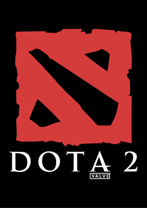

 Dota 2 Dota 2 là một trò chơi hành động chiến thuật thời gian thực (ARTS) được Valve Corporation phát triển, dựa theo một mod game nổi tiếng, Defense of the Ancients, từ trò chơi Warcraft III: Reign of Chaos và bản mở rộng của nó The Frozen Throne. Read More
The Radiant The Radiant is a faction in Dota 2. It is characterized by a bright, natural theme. The bottom left half of the game map belongs to the Radiant. Read More
The Dire The Dire is a faction in Dota 2. It is characterized by a dark, gloomy theme. The top right half of the game map belongs to the Dire. Read More